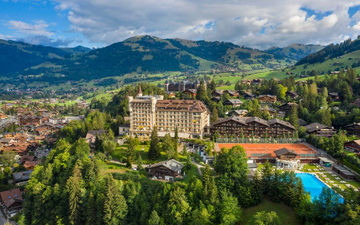
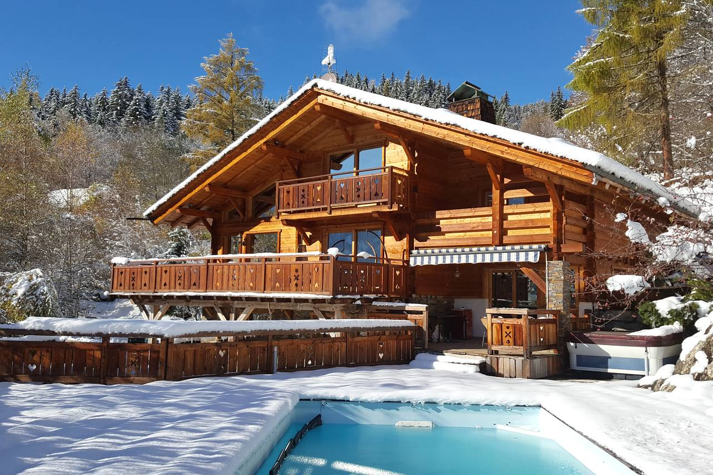
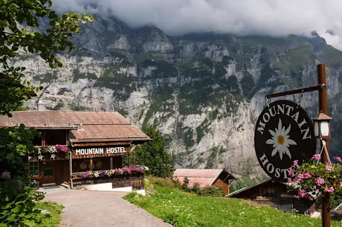
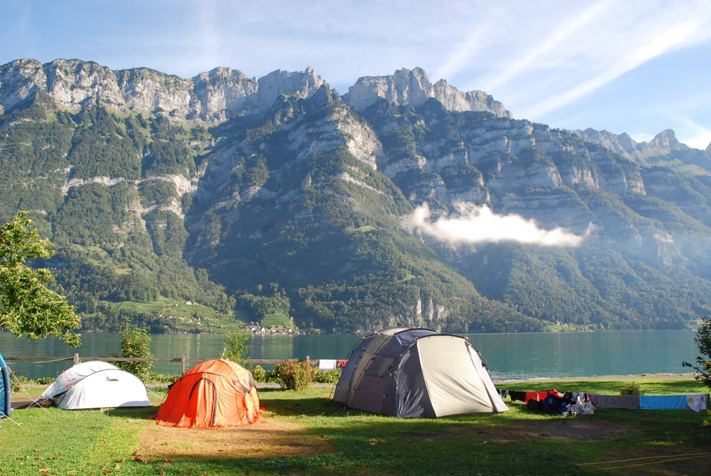

Switzerland offers accommodation to suit every taste and budget, though it is generally more expensive than other European countries. From iconic Belle Époque grand hotels on lakeshores to charming mountain chalets, rustic farmhouses, and excellent hostels, you'll find options throughout the country.
Types of Accommodation

Grand Palace Hotels
Switzerland invented the concept of luxury tourism. Iconic hotels like the Beau-Rivage in Geneva, the Victoria Jungfrau in Interlaken, and the Badrutt's Palace in St. Moritz are legendary worldwide.

Alpine Chalets
Traditional wooden chalets with stunning mountain views. Available as self-catering rentals for families and groups — excellent value compared to hotels.

Hostels
Switzerland has an excellent network of Youth Hostels (Jugendherberge). Clean, well-located, and far more comfortable than the name implies. Private rooms often available.

Camping
Hundreds of well-run campsites throughout the country, many in spectacular Alpine or lakeside settings. A budget-friendly option in summer.
Approximate Prices per Night
| Accommodation Type | Budget (CHF) | Notes |
|---|---|---|
| Hostel dorm | 35–55 | Swiss hostels are clean and well-run |
| Budget hotel / B&B | 90–150 | Prices higher in cities and ski resorts |
| Mid-range hotel | 150–280 | Good facilities, often with great views |
| Luxury hotel | 300–600+ | World-class service and locations |
| Chalet rental (per week) | 800–2,500+ | Ideal for groups of 4–8 |
| Mountain hut (SAC) | 40–70 | Dormitory, dinner included at most huts |
Best Areas to Stay
- Zurich – Best base for city breaks and day trips to Rhine Falls, Lucerne
- Interlaken – Central base for the Bernese Alps and both lakes
- Lucerne – Perfect central location for lake and mountain trips
- Zermatt – Stay here for skiing or summer hiking under the Matterhorn
- Lausanne or Montreux – For Lake Geneva region and French Switzerland